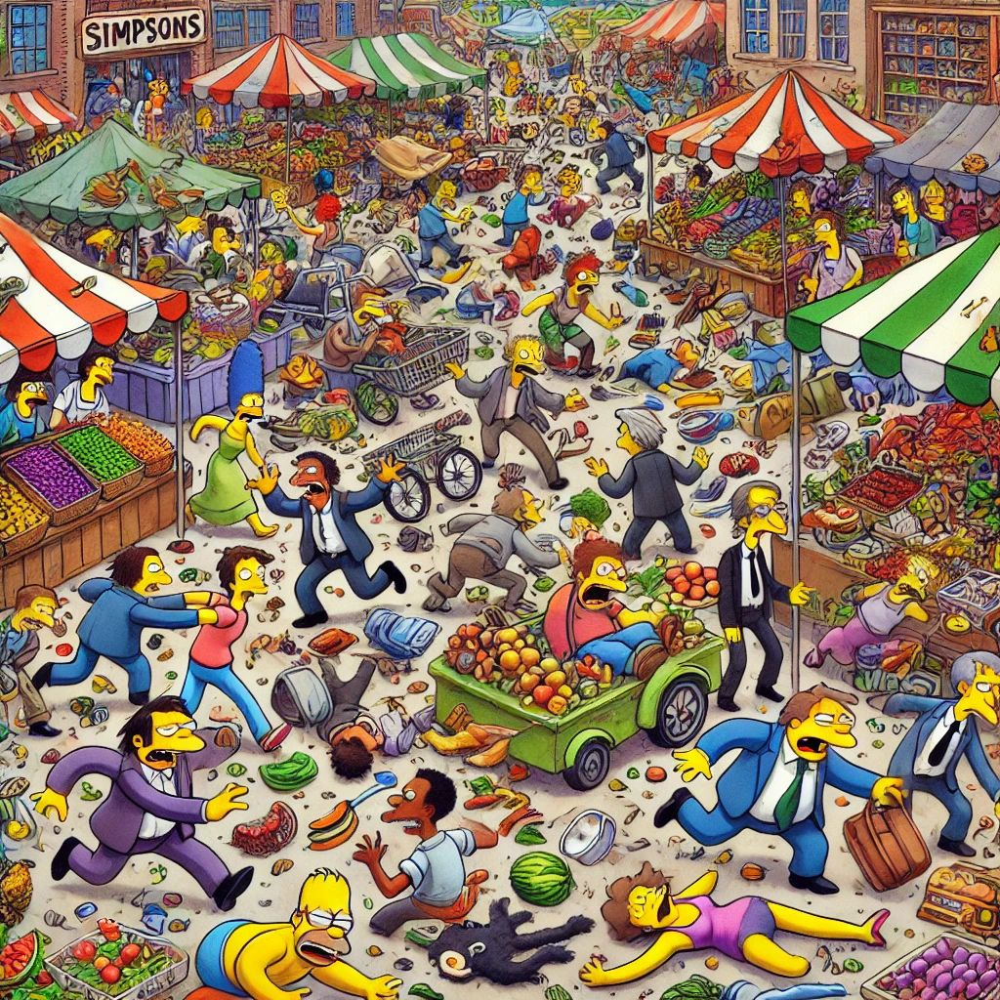
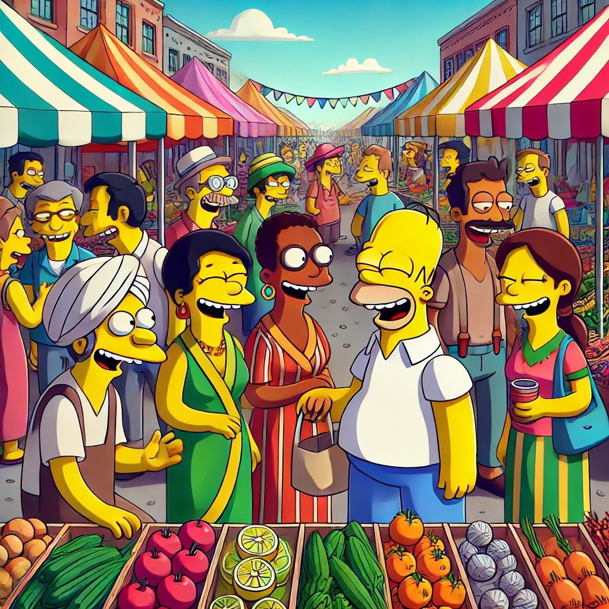

Fairr is a cutting-edge omnichannel commerce platform that supports local independent retailers by enhancing their online presence and streamlining their operational processes. It provides a unique marketplace for consumers to access a diverse range of local products, promoting sustainable and community-focused shopping.
Empowering local indie retail
Benefits to Producers and Merchants
For producers and merchants, Fairr offers powerful tools to manage inventory, track orders, and analyze customer behavior. These features enable them to optimize their operations, reach a wider customer base, and ultimately increase sales. The platform also allows them to tell their stories and the origin of their products, which helps build a trustworthy relationship with consumers.

Advantages for Buyers
Buyers benefit from Fairr through access to a curated selection of high-quality, locally-sourced goods that they might not find elsewhere. The platform provides a convenient and reliable shopping experience, complete with user reviews, detailed product information, and easy-to-use search and filter tools.

Impact on Local Economy and Retail Industry
Fairr is set to transform the local economy by keeping spending within the community, thereby supporting local jobs and businesses. It promotes a model of sustainable consumption by reducing the carbon footprint associated with long-distance transportation of goods. For the retail industry, Fairr introduces a new paradigm where local markets gain the tools to compete on equal footing with large e-commerce platforms, democratizing the retail landscape.
